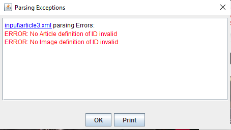

Home
Categories
Dictionary
Download
Project Details
Changes Log
What Links Here
How To
Syntax
FAQ
License
Errors
1 Configuration
2 Errors viewer
3 Wiki status
4 Common errors
4.1 Two articles with the same identification
4.2 Reference an article wich does not exist
4.3 Having a badly defined XML file for an article
4.4 Point an image definition to an image file which does not exist
4.5 Refer to an image which is not defined
4.6 Refer to a resource which does not exist
4.7 Refer to an external link which does not exist
5 Troubleshooting errors
6 Errors list
6.1 Having a lot of Unreachable URL Links errors
6.2 Having a few Unreachable URL Links errors, when the majority are OK
7 See also
2 Errors viewer
3 Wiki status
4 Common errors
4.1 Two articles with the same identification
4.2 Reference an article wich does not exist
4.3 Having a badly defined XML file for an article
4.4 Point an image definition to an image file which does not exist
4.5 Refer to an image which is not defined
4.6 Refer to a resource which does not exist
4.7 Refer to an external link which does not exist
5 Troubleshooting errors
6 Errors list
6.1 Having a lot of Unreachable URL Links errors
6.2 Having a few Unreachable URL Links errors, when the majority are OK
7 See also
This article explains how errors are handled in the parsing.
The main options allow to:
If errors are encountered during the parsing, a Popup window will appear showing the errors.
The panel presents the list of errors, ordered by the file in which they were encountered:
The "errorsViewerType" option allow to specify how these errors will be presented in the window:
It is possible to count the number of errors during the parsing by using the errors property.
The errors list article presents the list of errors which can be emitted during the parsing.
Chance is that you don't have access to the internet on your system, but you have a lot of external links. In that case you should configure the wiki to not check external links. This can be done on the command-line by setting to false the checkHTTPLinks property, or in the configuration file by setting to false the checkHTTPLinks property.
Beware that if you increase the timeOut value for all URLs, you will have an adverse result on the performance of the tool. Another way you have to get rid of this warning is no specify explicitly for the link that you don't want to check its validity (see not checking links for one element).
Configuration
Several command-line argument or configuration property options allow to specify how to handle errors during the parsing.The main options allow to:
- "checkHTTPLinks": set if the URL links with the "http" protocol are checked
- "showWarnings": set if warnings should be presented. By default only errors are presented
- "errorsViewerType": specifies how to view the files if errors are encountered. See also Errors viewer for more information
Errors viewer
Main Article: Errors viewer
If errors are encountered during the parsing, a Popup window will appear showing the errors.
The panel presents the list of errors, ordered by the file in which they were encountered:

The "errorsViewerType" option allow to specify how these errors will be presented in the window:
- "none": the files won't be opened from the error panel
- "browser": (the default value) the source file for each error will be opened in the platform default browser
- "editor": the source file for each error will be opened in a built-in editor
Wiki status
Main Article: Showing the wiki status
It is possible to count the number of errors during the parsing by using the errors property.
Common errors
Two articles with the same identification
If two articles have the same identification, the generator will create a Disambiguation article and you will see this kind of error message:Article Article1 already exists, added in a disambiguity article
Reference an article wich does not exist
If you reference an article which does not exist, you will see this kind of error message:No Article definition of ID undefinedor if the article exists but the anchor does not exist in the article:
No anchor of ID #the_title in article article2
Having a badly defined XML file for an article
If an article has a badly defined XML file, you will have XML validation exceptions, such as:cvc-complex-type.3.2.2: ...
Point an image definition to an image file which does not exist
If you define an image definition which point to an image file which does not exist, you will see this kind of error message:There is no Image at ball2.jpg
Refer to an image which is not defined
If you refer to an image which is not defined, you will see this kind of error message:No Image definition of ID undefinedImage
Refer to a resource which does not exist
If you refer to a resource file which does not exist, you will see this kind of error message:The Resource at resource.html does not exist
Refer to an external link which does not exist
If you refer to an external link which does not exist, you will see this kind of error message:Unreachable URL link
Troubleshooting errors
Main Article: Troubleshooting
Errors list
Main Article: Errors list
The errors list article presents the list of errors which can be emitted during the parsing.
Having a lot of Unreachable URL Links errors
Main Article: Checking external links
Chance is that you don't have access to the internet on your system, but you have a lot of external links. In that case you should configure the wiki to not check external links. This can be done on the command-line by setting to false the checkHTTPLinks property, or in the configuration file by setting to false the checkHTTPLinks property.
Having a few Unreachable URL Links errors, when the majority are OK
Chance is that that the affected linked URL is much slower to access than the others. By default the timeOut for the access to one site is 300 ms, but you can configure its value.Beware that if you increase the timeOut value for all URLs, you will have an adverse result on the performance of the tool. Another way you have to get rid of this warning is no specify explicitly for the link that you don't want to check its validity (see not checking links for one element).
See also
- Errors list: This article presents the list of errors which can be emitted during the parsing
- Errors viewer: This article explains how parsing errors are presented in the tool
- Showing the wiki status: This article explains how to show the wiki status in the wiki
×

Categories: Configuration | General